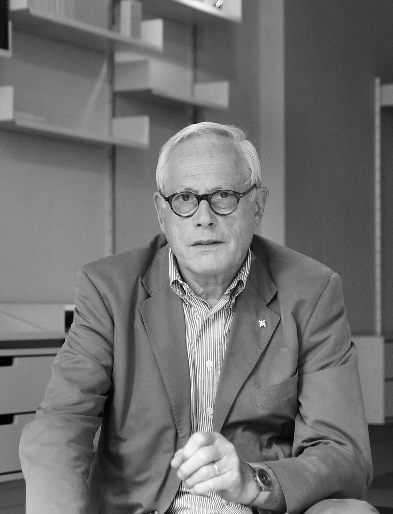

DIETER RAMS
Dieter Rams, born on May 20, 1932, is a German industrial designer renowned for his association with companies like Braun and Vitsœ, as well as for his role in the functionalist school of industrial design. His philosophy of "less, but better" design has had a profound impact on 20th-century aesthetics and culture, shaping the practice of design. Rams emphasizes the importance of design being considerate of people and their lived reality, stating that indifference towards this is the cardinal sin in design. He initially studied architecture and interior decoration at the Wiesbaden School of Art, later graduating with honors in 1953. Rams began his professional career with Frankfurt-based architect Otto Apel before joining Braun in 1955, where he worked as an architect and interior designer. Rams was influenced by figures such as Fritz Eichler and professors from the Ulm School of Design, including Hans Gugelot and Otl Aicher, all of whom were associated with Braun.